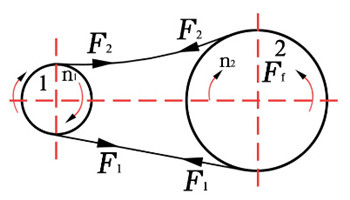

1.皮带的受力分析
安装带传动时，传动带即以一定的预紧力F0紧套在两个带轮上。由于F0的作用，带和轮的接触面上就产生了正压力。带传动不工作时传动带两边的拉力相等，都等于F0，如图1所示。
图1 非工作状态皮带受力状态
带传动工作时，设主动轮以速度n1转动，带与带轮的接触面间便产生摩擦力，动轮作用在带上的摩擦力Ff的方向和主动轮的圆周速度方向相同，动轮即靠此摩擦力驱使带运动。带作用在从动轮上的摩擦力的方向显然与带的运动方向相同（如图2所示，轮2的内侧，带轮作用在带上的摩擦力的方向则与带的运动方向相反），带同样靠摩擦力Ff而驱使从动轮以转速n2转动。这时传动带两边的拉力也相应地发生了变化。带绕上主动轮的一边被拉紧，叫做紧边。紧边拉力由F0增加到F1，带绕上从动轮的一边被放松，叫做松边，松边拉力由F0减少到F2。
图2 工作状态皮带受力状态
2.张紧轮的布置
由上面的受力分析，我们不难发现，皮带传动的承载能力主要是到带轮和皮带轮之间摩擦力大小影响。而摩擦力大小主要是受到预紧力F0大小影响的。一般来说，可以调节同步带的中心距离a0来控制预紧力F0大小，但在某些情况下带轮的中心距是难以调节的，这个时候，我们通常通过张紧轮来调节预紧力F0大小。一般来说，张紧轮布置在松边外侧靠近小带轮的附近，或则布置在紧边内侧靠大带轮的附近。如图3所示。
图3 张紧轮